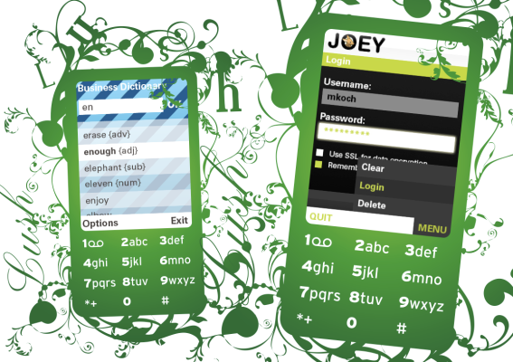

Beautify your application, design it outside of your application's source code and add breath taking effects using the Lush UI.

With J2ME Polish you can customize your application without changing the source code of your application. The design along with animations and effects are specified in external CSS files, very similar to the web standard.
This process not only separates the design from the development of the business logic, it also allows you to create different customizations very easily.
If that’s not enough, you can use our WYSIWYG designer for speeding up the process!
Did we mention that we provide hundreds of design options? Use for example non-standard fonts, font effects, animations like screen transitions and menu options like the fisheye view.